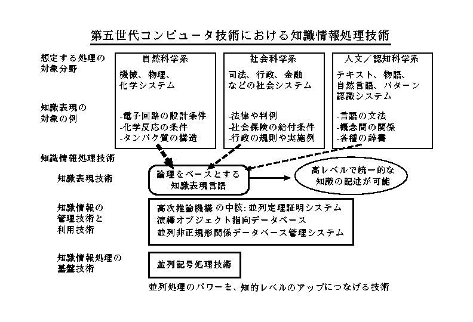

本プロジェクトで開発された知識情報処理の基盤技術、 すなわち、論理に基づき各種の知識をプログラムし、知識ベース化するための 中核技術は、大規模並列処理技術を土台として構築されている。
その土台となっている大規模並列処理技術が、 「第五世代コンピュータの研究基盤化プロジェクト」の実施によって、 広く世界に普及していくことは、知識情報処理技術の将来に 大きな可能性を生み出すことになる。
本プロジェクトで開発された論理を基本とした知識表現言語は、 演繹・オブジェクト指向言語や制約論理型言語と呼ばれている。この種の 言語は、人間社会にとって有用な知識を記述し、知識ベース化する場合の最も有 望な枠組みである。

このような知識表現言語や関連技術は新しい応用分野の開拓を 加速する。自然科学分野でも、従来の機械や建築などの分野に加えて、 分子生物学における遺伝子情報処理など、新しい分野へ応用され始めている。 また、社会科学分野における行政や法律の知識情報処理が注目されている。 さらに、いくつかの実験的応用システムの試作を通して、論理に基づく知識表現 言語が、従来型の知識表現言語と異なり、多くの分野に統一的に適用可能であること がわかってきた。
それと同時に、人間社会にとって有用な知識を活用するためには、 知識表現言語で記述し、コンピュータ上に蓄積する作業とともに、 その構造や体系自身をより整理された形に組み直す作業が必要であることも わかってきた。
大規模並列処理技術とそれに裏打ちされた知識情報処理技術が、 自由に利用可能となる時代には、知識の整理や体系化を含む知識 ベース化技術など、新しい知識情報処理技術が生まれ、その分野特有の発展を 遂げるであろう。
このような発展段階に至った時に、第五世代コンピュータの 知識情報処理技術の中心である「論理に基づく知識表現をプログラ ミング言語とし、その証明過程を計算のモデルとする新しいコンピュータ技術」が、 真のブレークスルーを達成していたことがわかるだろう。